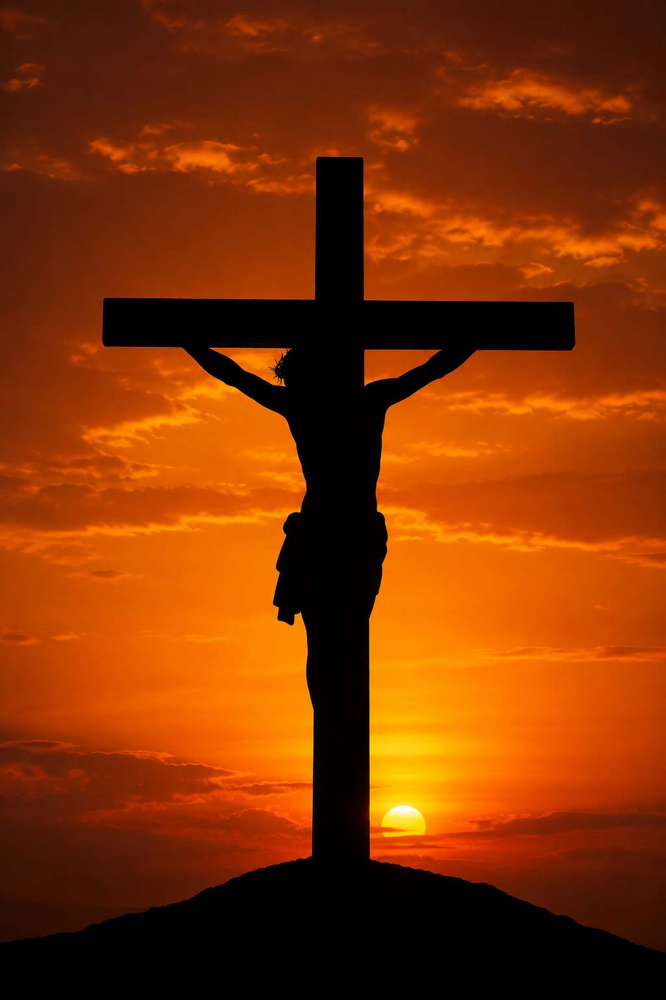

Conhecer a Jesus é conhecer o coração do Pai
Este estudo nos conduz por sete passos essenciais para compreender quem é Jesus Cristo, segundo as Sagradas Escrituras. Ele tem por propósito firmar no coração a certeza de que o Filho de Deus é, ao mesmo tempo, plenamente divino e plenamente humano — o único Salvador da humanidade.
Por que o Filho recebeu o nome Jesus?
O nome Jesus vem do hebraico Yeshua (forma abreviada de Yehoshua), que significa literalmente "Yahweh é salvação" ou "O Senhor salva". Esse nome não foi escolhido por José ou Maria — foi entregue pelo próprio céu, por meio do anjo Gabriel.
"Ela dará à luz um filho, e tu lhe porás o nome de Jesus; porque Ele salvará o seu povo dos seus pecados." — Mateus 1:21
O próprio nome de Cristo já é uma profecia cumprida: Ele veio com a missão específica de salvar pecadores. Cada vez que pronunciamos esse nome, lembramos do plano da redenção concebido antes da fundação do mundo.
O Verbo pelo qual tudo foi criado
O apóstolo João apresenta Jesus como o "Verbo" (Logos) — a Palavra eterna de Deus. Ele não é apenas o agente da criação; Ele é o próprio Criador atuando ao lado do Pai desde a eternidade.
"Ele estava no princípio com Deus. Todas as coisas foram feitas por intermédio dele, e sem ele nada do que foi feito se fez." — João 1:2-3
"Pois nele foram criadas todas as coisas… tudo foi criado por meio dele e para ele. Ele é antes de todas as coisas, e nele tudo subsiste." — Colossenses 1:16-17
Jesus é, portanto, o arquiteto do universo: foi por Sua palavra que os céus se firmaram, as estrelas tomaram lugar e a vida brotou. O mesmo Cristo que sustenta cada átomo é o que se entregou na cruz por nós.
Veio buscar e salvar o perdido
Quando o pecado entrou no mundo, a humanidade ficou separada de Deus e sentenciada à morte eterna. Mas o céu já havia preparado um plano de resgate — e Jesus se ofereceu voluntariamente para cumpri-lo.

"Porque o Filho do Homem veio buscar e salvar o que se havia perdido." — Lucas 19:10
A obra de Cristo envolve três grandes etapas:
- Encarnação — assumiu a natureza humana para viver entre nós (João 1:14).
- Vida perfeita — viveu sem pecado, cumprindo toda a lei em nosso lugar (Hebreus 4:15).
- Morte expiatória — entregou-se na cruz, pagando o preço do pecado (1 Pedro 2:24).
- Ressurreição — venceu a morte e o sepulcro (1 Coríntios 15:20).
- Ministério celestial — hoje intercede por nós como Sumo Sacerdote no Santuário (Hebreus 8:1-2).
Verdadeiro Deus, verdadeiro Homem
Uma das verdades mais profundas das Escrituras é o mistério da encarnação: em Jesus, a divindade e a humanidade se uniram em uma só Pessoa, sem confusão e sem divisão.
Natureza Divina
Jesus é eterno, onipotente e onisciente — plenamente Deus, da mesma essência do Pai.
- "Eu e o Pai somos um." — João 10:30
- "Ele é o resplendor da glória de Deus e a expressão exata do seu Ser." — Hebreus 1:3
- "No princípio era o Verbo, e o Verbo estava com Deus, e o Verbo era Deus." — João 1:1
- "Pois nele habita corporalmente toda a plenitude da Divindade." — Colossenses 2:9
Natureza Humana
Jesus tomou sobre Si a carne humana, viveu nossas dores e nos compreende plenamente.
- "E o Verbo se fez carne e habitou entre nós." — João 1:14
- "Foi tentado em todas as coisas, à nossa semelhança, mas sem pecado." — Hebreus 4:15
- "Todo espírito que confessa que Jesus Cristo veio em carne é de Deus." — 1 João 4:2
- "Esvaziou-se a si mesmo, assumindo a forma de servo… humilhou-se… até à morte de cruz." — Filipenses 2:6-8
Os nomes que Isaías deu a Jesus
Mais de 700 anos antes do nascimento de Cristo, o profeta Isaías já revelava, sob inspiração do Espírito Santo, a grandeza de quem viria. Em Isaías 9:6 e 7:14 estão alguns dos mais belos títulos messiânicos das Escrituras.
Maravilhoso
Aquele que é admirável em Seu caráter, em Suas obras e em Seu amor por nós.
Isaías 9:6Conselheiro
Sábio guia que orienta nossas decisões com a verdade do Pai.
Isaías 9:6Deus Forte
Poderoso em batalha — vence o pecado, a morte e Satanás.
Isaías 9:6Pai da Eternidade
Origem de toda vida — eterno, sem princípio nem fim.
Isaías 9:6Príncipe da Paz
Aquele que reconcilia o homem com Deus e traz paz verdadeira ao coração.
Isaías 9:6Emanuel
"Deus conosco" — o sinal de que o Criador veio habitar entre Suas criaturas.
Isaías 7:14O que Jesus promete aos que creem
A fé em Cristo não é apenas crença intelectual — é a porta para promessas eternas. Para quem nEle crê, o Salvador faz declarações poderosas que sustentam o cristão em toda jornada.
Vida que vence a morte
"Eu sou a ressurreição e a vida. Quem crê em mim, ainda que morra, viverá."
João 11:25
Vida eterna
"E todo aquele que vive e crê em mim nunca morrerá."
João 11:26
Coração tranquilo
"Não se turbe o vosso coração; credes em Deus, crede também em mim."
João 14:1
Um lar preparado
"Na casa de meu Pai há muitas moradas… vou preparar-vos lugar."
João 14:2
A volta de Cristo
"Voltarei e vos receberei para mim mesmo, para que, onde eu estou, estejais vós também."
João 14:3
Companhia constante
"Eis que estou convosco todos os dias até à consumação do século."
Mateus 28:20
Detalhes que tocam o coração
Mais de 300 profecias
O Antigo Testamento contém mais de 300 profecias específicas sobre o Messias, todas cumpridas em Jesus de Nazaré.
O "Eu Sou"
Jesus usou sete grandes declarações "Eu Sou" no evangelho de João — pão, luz, porta, bom pastor, ressurreição, caminho e videira.
Cordeiro de Deus
João Batista O chamou de "Cordeiro de Deus que tira o pecado do mundo" (João 1:29) — referência direta aos sacrifícios do santuário.
Alfa e Ômega
No Apocalipse, Jesus se identifica como o Princípio e o Fim — Aquele que era, que é e que há de vir (Apocalipse 1:8).
Sumo Sacerdote
Os adventistas creem que, desde 1844, Jesus realiza o juízo investigativo no Santíssimo Lugar do Santuário celestial (Hebreus 8 e 9).
Mediador único
"Há um só Deus e um só Mediador entre Deus e os homens, Jesus Cristo homem" (1 Timóteo 2:5) — não há outro caminho ao Pai.
Conte a um amigo
Esta etapa é a mais transformadora: levar a outras pessoas as promessas de Jesus. Não basta conhecer — é preciso testemunhar.
Convide um amigo para um momento simples: abra a Bíblia em João 11:25-26 e João 14:1-3. Leia juntos. Conte com suas próprias palavras o que essas promessas significam para você. Compartilhar a esperança em Jesus é o coração da missão do desbravador.
"Ide por todo o mundo e pregai o evangelho a toda criatura." — Marcos 16:15